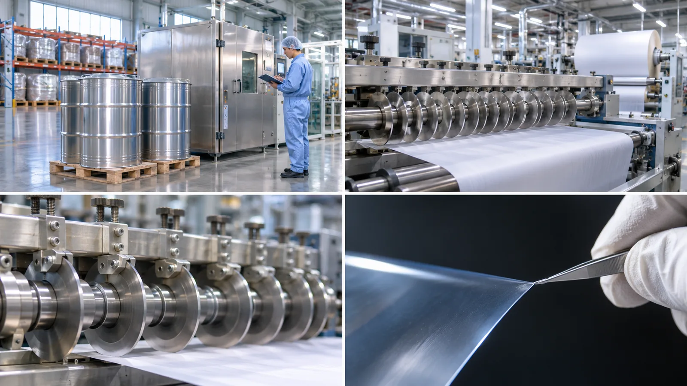
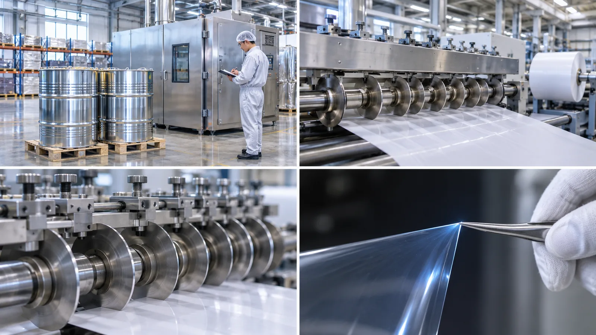

Published November 19, 2026 | By HDPTH Technical Editorial Team

Optical-grade films sit at the top of the roll-to-roll difficulty curve. Optical PET, TAC, polarizer, OCA and diffusion films are thin, soft, high-value and inspected surface by surface under backlight — a scratch invisible in packaging film is scrap in a polarizer, and a particle pressed in by an ordinary idler roll becomes a dark speck under a display panel. A slitter rewinder for optical film is therefore not a faster or wider version of a standard converting machine — it is a different design philosophy, in which every contact point, every particle source and every vibration input is treated as a potential yield loss.
Why optical film is a class of its own
The economics explain the engineering. Optical films carry a value per square meter far above packaging or label webs, and a defect does not merely downgrade a roll: a scratch can run the full length of the finished roll and destroy every downstream display or laminate it touches. First-pass yield, defect count per kilometer and contamination level per roll decide whether a machine earns its place — which inverts the usual buying logic, in which throughput and changeover time dominate the specification.
Four properties define the class. First, contact sensitivity: the web path should touch as few rollers as possible, and every unavoidable contact must be a precision idler with a defined surface finish, straightness and alignment. Second, cleanliness: the machine itself must not generate or trap particles, because static-charged film attracts dust from bearings, brakes and the floor, and the slitting point generates dust by nature — it must be captured, not left to drift back onto the web. Third, low-tension web handling: thin, soft films elongate, distort and wrinkle at tensions normal for packaging webs, and tension that is uneven across the width buckles one lane while stretching another, so uniformity matters as much as the level. Fourth, edge quality without burrs or delamination: multilayer stacks — a polarizer with TAC protective layers, OCA adhesive constructions — must come off the knife with a clean, dust-free edge, no whitening and no separation of the layers along the slit line.
Vibration completes the list, quietly. Banner marks and periodic scratches on optical film are frequently traced to a slitting section resonating at speed. A supplier proposing a machine for this class should be able to discuss structural stiffness, mounting requirements and vibration behaviour at production speed, because a clean design on an inadequate foundation will not stay clean.
Machine configuration choices for optical-grade slitting
Contact-free handling is the first configuration decision. Where the film surface must not touch anything after slitting — or between unwind and the knife — air turn bars, vacuum conveyance tables and porous support belts replace roller contact with an air film. Where contact is unavoidable, rollers are specified like measuring instruments: polished or hard-anodised surfaces, documented straightness and balance, active web guiding before critical points. The enclosure follows the same logic: a cleanroom-compatible design uses smooth, wipe-down surfaces, sealed components that do not shed, and filtered air where the machine opens to the room.
Dust control is inseparable from slitting, because cutting is the one process step that must create particles. The configuration that matters is an enclosed slitting station with extraction and filtration at the cut point, so slit dust is removed before it can land on the downstream web, plus non-contact web cleaning upstream of the knife and static elimination along the path — a charged film acts as a dust collector.
Unwind and rewind precision decide whether the web stays flat and the finished rolls stay square. Load-cell tension control holding very low setpoints with low drift, concentric unwind chucks and a stiff rewind structure keep the film flat; rewind shaft selection then matches the product — air shafts or core chucks where surface quality dominates, differential shafts where many narrow lanes wind side by side and each must hold its own tension. Camera inspection closes the loop: line-scan systems detect scratches, dents, inclusions and dark specks on transparent film, and log each defect against its position on the roll so downstream processes can find it or cull it deliberately.

Tolerance and defect criteria to write into the URS
The URS is where an optical-film project is won or lost, and the discipline is simple: every criterion must be measurable and tied to a named instrument and inspection condition. Slit width tolerance is the easiest to get wrong — a number without a method is not a specification. State the target width and tolerance, the instrument and magnification used to measure it, where on the finished roll it is measured, and whether it must hold over the full roll length. Edge quality follows the same pattern: define the allowable burr condition, a slit-dust limit tied to a defined inspection method such as backlight or microscope examination at a stated magnification, and a no-delamination clause for multilayer stacks covering whitening, layer separation and adhesive squeeze-out along the slit line.
Surface and contamination criteria complete the set. Define defect classes — scratches, dents, inclusions, dark specks, streaks — with size thresholds and allowable counts per roll, the camera or manual inspection conditions used to enforce them, and the contamination limit for delivered rolls. Frame all of these as what to specify and verify rather than as guarantees handed to you: the buyer writes the criteria and the inspection methods, the supplier confirms on trial material that the machine can meet them, and both sides record the confirmed values in the contract. A vendor who resists defining verification methods for these criteria is telling you something about the machine.
Acceptance testing for optical film at the FAT
Optical-film behaviour is testable, and the test belongs in the factory acceptance protocol. The foundation is running your own material — or an agreed representative optical film if your product is restricted — at production speed, width and lane pattern. The protocol should include live camera inspection running continuously with the defect map displayed and recorded, so detection sensitivity and false-alarm behaviour are demonstrated over a full roll rather than a short demo; edge inspection of every lane under the magnification named in the URS, with photographs retained; slit width measurement on finished rolls at defined positions; surface inspection of finished rolls under backlight; and roll-quality checks for hardness distribution and telescoping where the downstream process needs them. If the installation site has foundation or floor concerns, add a vibration measurement at the slitting section at production speed.
Two procedural rules protect the buyer. First, fix sample sizes, pass criteria and recording requirements in the FAT protocol before the test, not during it — an acceptance decision improvised at the machine is no acceptance decision. Second, require the raw evidence in the FAT report: the full defect map, the edge photographs, the width measurement records and the camera settings used. That report becomes the baseline for future disputes and for the site acceptance test.
Vendor qualification questions for optical film projects
Before the quotation, put the questions that separate optical-grade suppliers from general converters:
- Which sections of the web path are contact-free, and what replaces each roller in those zones?
- What cleanliness features are built into the design — enclosure, filtration, materials, wipe-down geometry — and can particle measurements be demonstrated at the FAT?
- What is the lowest stable operating tension, how is it measured and calibrated, and how is uniformity across the width verified?
- Which slitting methods are offered for this film class, and what edge condition does each produce on material like mine?
- What is the camera system’s detection sensitivity on transparent films, its classification and mapping accuracy, and its false-alarm behaviour over a full roll?
- Which reference converters run this machine today on optical PET, TAC, polarizer or OCA films, and may we contact them?
- How are idler rolls specified — surface finish, straightness, coating — and what is their documented service life?
The answers, or the hesitation to give them, form the real technical ranking behind the commercial one. Two related guides extend this checklist: Slitter Rewinder Slit Edge Quality Buyer’s Guide: Burr, Dust and Edge Appearance Analysis covers how slitting method and knife setup decide the edge condition your optical film will show, and Slitter Rewinder Dust Extraction System Guide for Plant Managers explains how to keep slitting dust out of a clean web path. To see where these controls are applied across a machine range, review the High-Speed Slitting Machines product page.
Planning a Slitter Rewinder for Optical-Grade Film?
Send HDPTH your film structure, width, roll diameters and defect criteria. Our application engineers will review contact-free handling, dust control, tension architecture and camera inspection against your yield targets — and propose a testable FAT programme on your own film before you commit to a build.
Submit Your Project InquiryBuyer FAQs
Why does optical film need a different slitter rewinder than packaging film?
Packaging webs are judged on speed and roll geometry; optical films are judged on surface perfection and yield. Thin, soft, high-value films are contact-, particle-, vibration- and tension-sensitive, so the machine must minimise web contact, control dust, isolate vibration and hold very low, very uniform tension — requirements a standard converting specification does not cover.
Which slitting method gives the cleanest edges on optical film?
It depends on the film stack. Shear slitting with precisely set knife overlap is the usual baseline for optical PET and similar films; razor and crush cutting are generally avoided where burrs and slit dust would reach the product; laser slitting is specified for stacks where mechanical contact at the slit line must be avoided. Judge the decision on trial cuts of your actual film with the inspection method named in the URS.
How low does web tension need to be for optical-grade films?
Low enough that the film neither stretches nor slips, and uniform enough that no lane or edge is over-tensioned — the exact values depend on film thickness, width and structure, so treat them as a specification and verification task rather than a catalogue number. At the FAT the supplier should demonstrate stable, uniform tension on your material at production speed, with the measurement method documented.
What defect criteria should the URS define for optical film slitting?
Measurable, instrument-tied criteria: slit width tolerance with its measurement method, an edge-quality limit covering burrs and slit dust, a no-delamination clause for multilayer stacks, and surface defect classes — scratches, dents, inclusions, dark specks — with size thresholds and allowable counts per roll. Every limit should name the instrument and inspection conditions used to verify it.
How is an optical-film slitter rewinder accepted before shipment?
At the FAT, on your own material or an agreed representative film, at production speed and width: live camera inspection with a defect map, edge inspection under defined magnification on every lane, slit width measurement across the roll length, surface inspection of finished rolls under backlight, and roll-quality checks — with sample sizes, pass criteria and recording requirements fixed before the test.